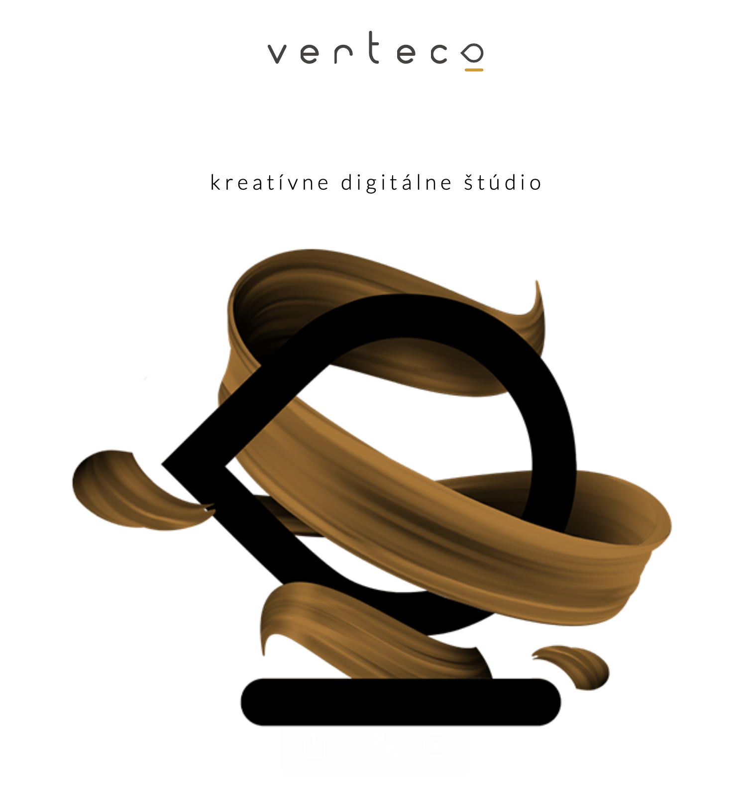

Verteco, s.r.o.
Asistentka
"Ahojte mamičky, som zakladateľ štúdia Verteco. Sme marketingová agentúra a Covid nás naučil fungovať
plne
home office. Preto sa nebojte ani vy, práca sa dá robiť úplne z domu a ste 100% pán svojho času,
keďže
viem, že máte iné a omnoho dôležitejšie veci - výchova vaších ratoleslí :) Ak by ste si k tomu
chceli
privyrobiť, u nás sa dá teda pracovať na diaľku a kedykoľvek počas dňa. Potrebujem asistentku, čo mi
pomôže s bežnou operatívou. A ak by mala nejaká z vás záujem, moji grafici a kreatívci vás môžu
zaškoliť
aj do ďalších činností :) Budem sa tešiť na Váš email :)"
Norman Bystričan, production manager, Verteco
Miesto: home office
Forma: TPP/ skrátený úväzok
Flexi faktor: 100% home office, ľubovoľný počet odprac. hodín (podmienka - aspoň 10
hod.
týždenne), flexibilná pracovná doba
Plat: 5 €/hod
Chcem vidieť detail ponuky ➔